Konzeptatlas · Vorschläge vom 15.10.2026 · keine Live-Oberflächen
1. Der gemeinsame Spiele-Hub
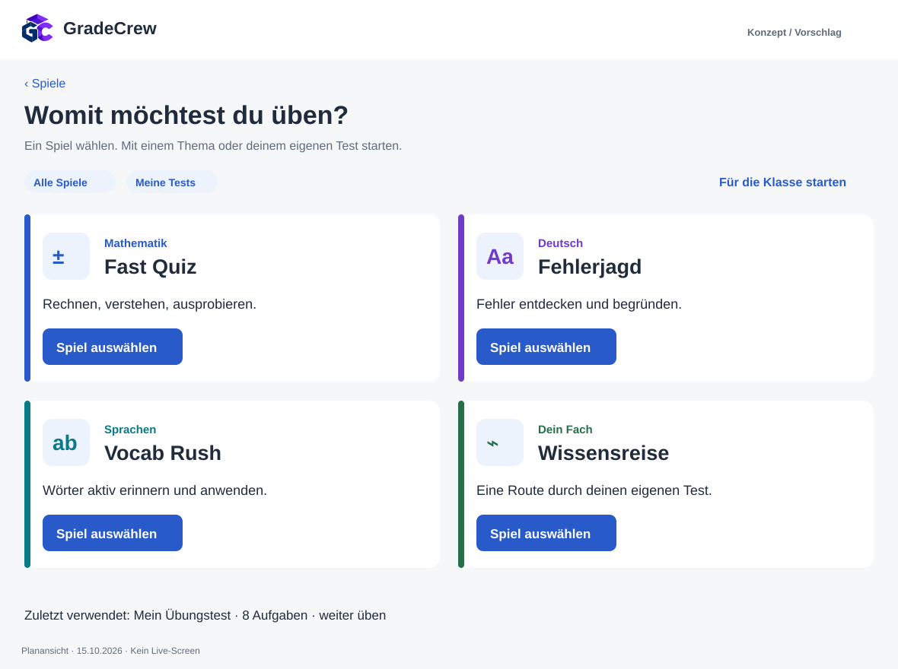
Desktop. Eine gemeinsame Marke, vier klare Fachprofile. Eine primäre Auswahl pro Spiel führt zum einfachen Start; die genaue Auswahl folgt bei Bedarf.
2. Ein schneller Start mit wenigen Entscheidungen
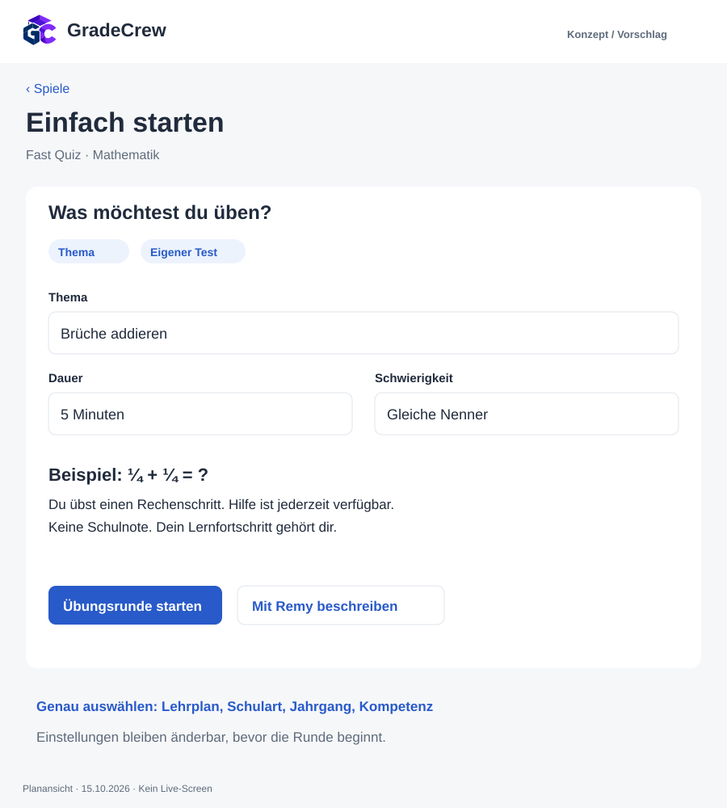
iPad. Thema oder eigener Test, Dauer und greifbare Schwierigkeit. Die umfangreiche Lehrplanauswahl liegt hinter einem zweiten Einstieg.
3. Remy übersetzt einen Wunsch in prüfbare Felder
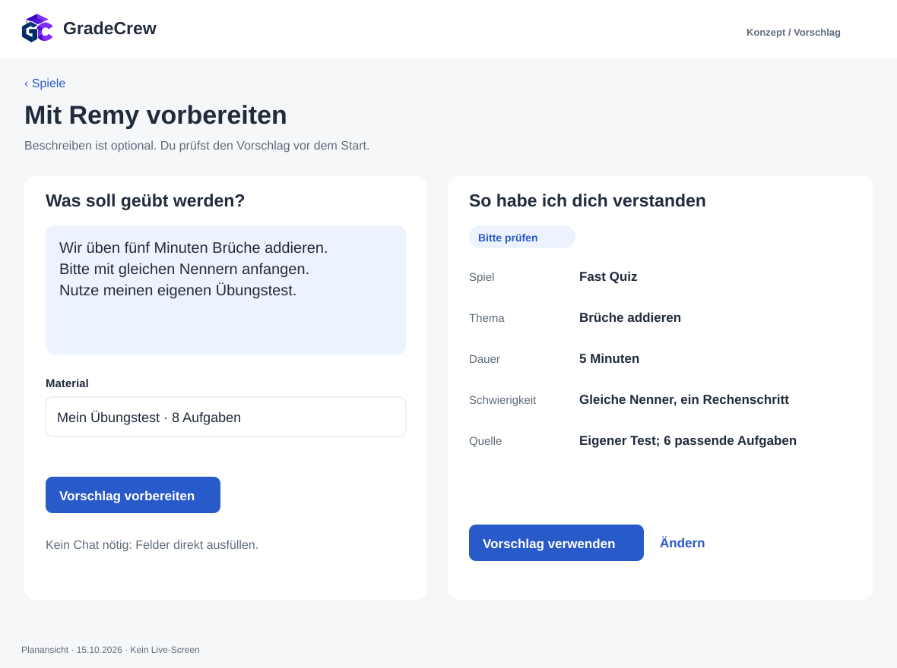
Desktop. Die Parameter stehen vor dem Start offen. Materialauswahl und Anpassungen bleiben sichtbar; Mehrdeutigkeit erzeugt eine Rückfrage statt stiller Annahmen.
4. Die genaue Auswahl bleibt verfügbar
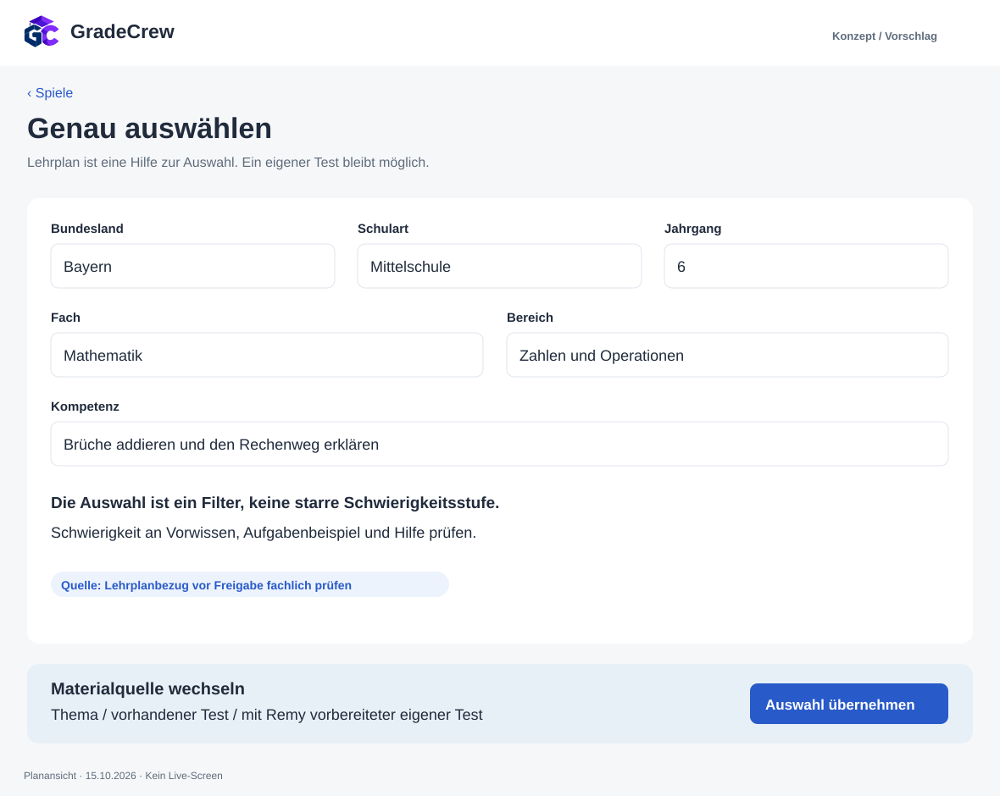
Desktop. Abhängige Filter werden schrittweise eingeblendet. Bei einem Wechsel werden unpassende Folgewerte erklärt, statt verdeckt weiterverwendet.
5. Schwierigkeit wird an Beispielen verständlich
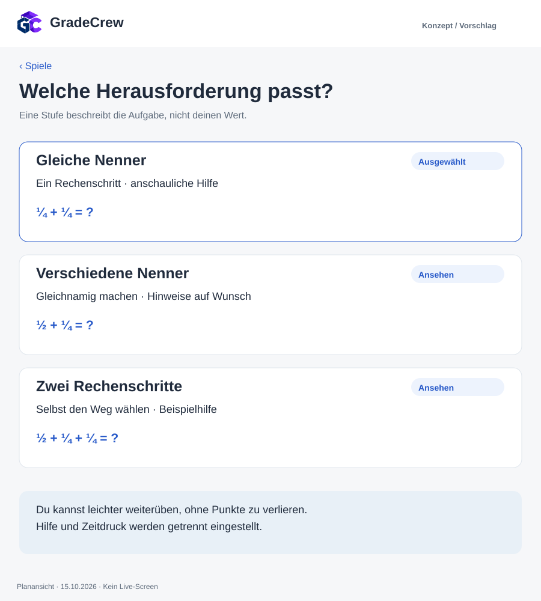
iPad. Anstelle von Level 3 stehen konkrete Zahlenräume, Schritte und Hilfen. Lernende können zurückwechseln; Geschwindigkeit ist eine eigene Option.
6. Eine gemeinsame Runde mit sicherem Board
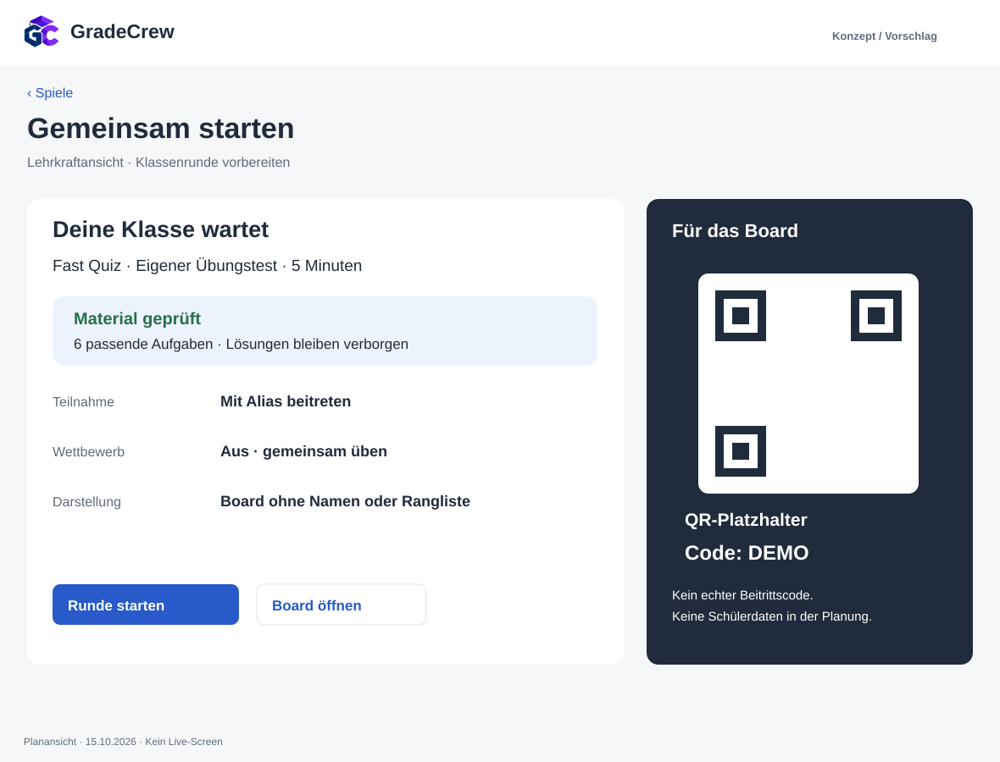
Desktop / Board. Die Lehrkraft prüft Material und Modus. Board und Beitritt zeigen nur die benötigten Angaben; der QR ist ausdrücklich ein nicht funktionaler Platzhalter.
7. Die Aufgabe hat auf dem Handy Vorrang
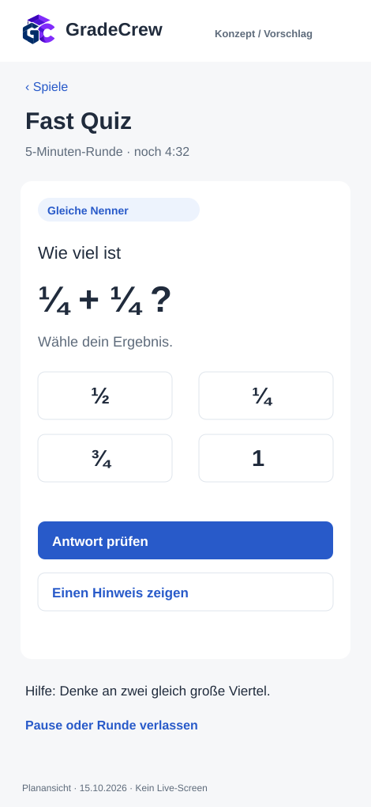
Phone. Große Antwortflächen, getrenntes Prüfen und sichtbare Hilfe. Keine Rangliste oder hektische Animation neben der eigentlichen Lernaufgabe.
8. Der Abschluss führt zurück ins Lernen
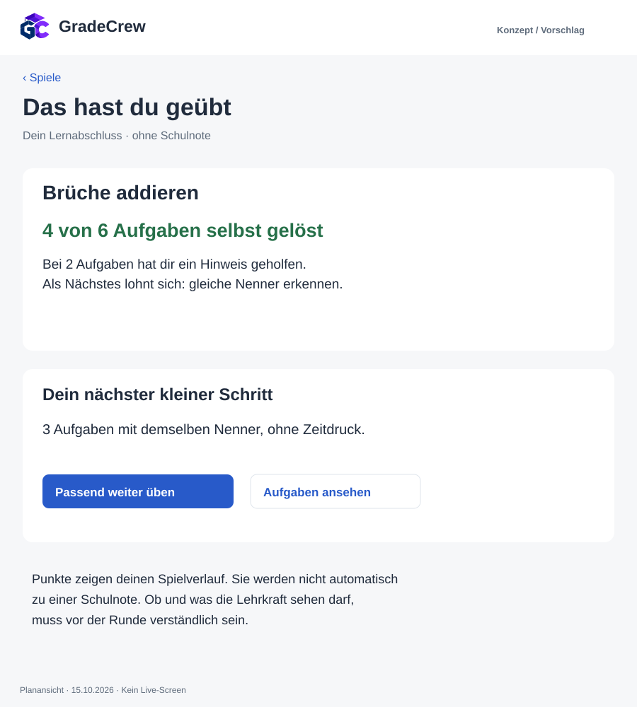
iPad. Ergebnis, genutzte Hilfe und konkreter nächster Übungsschritt stehen zusammen. Spielpunkte werden sprachlich und fachlich von Noten getrennt.
9. Leere und fehlerhafte Zustände bleiben handlungsfähig
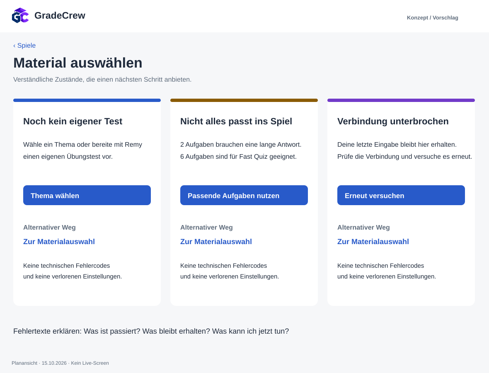
Desktop. Kein Zustand endet in einer Sackgasse. Ungeeignete Aufgaben werden erklärt, statt still verworfen; Rückweg und Wiederholen bleiben sichtbar.
10. Eigene Tests erhalten eine nachvollziehbare Route
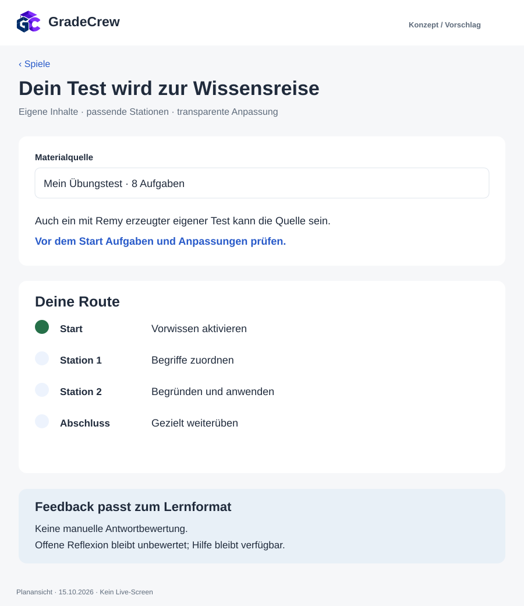
iPad. Wissensreise verwendet eigene Tests statt einer festen Themeninsel. Aufgabentypen und Feedback werden je Station geprüft. Es gibt keine manuelle Antwortbewertung; offene Reflexion bleibt unbewertet.
11. Deutsch: eine Fähigkeit gezielt üben
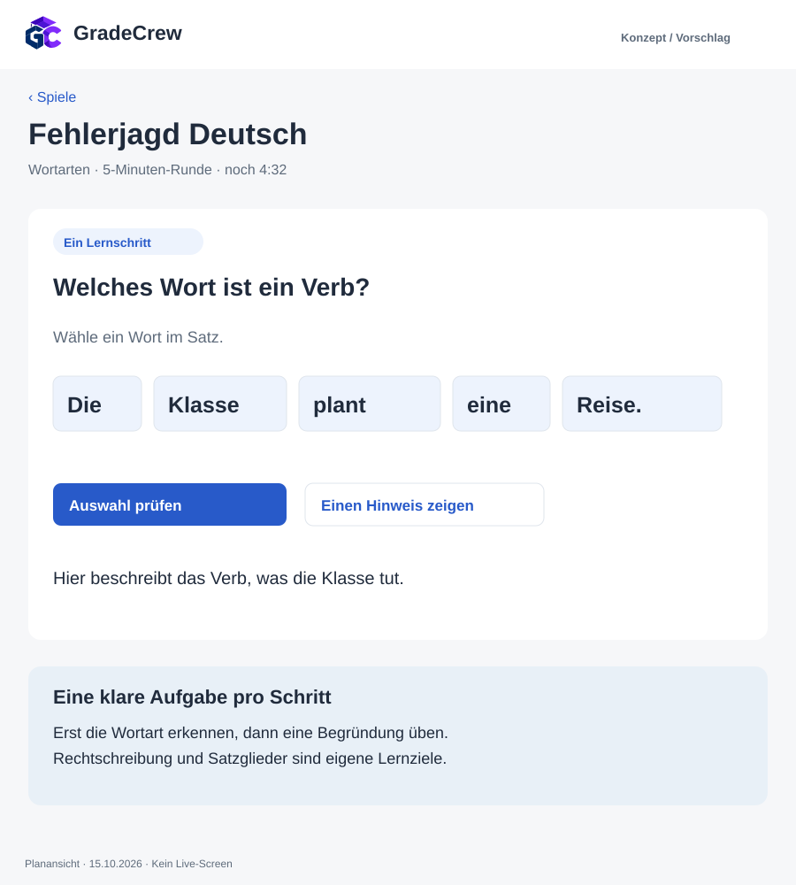
iPad. Das Eingabeformat folgt dem Fach: Wörter markieren statt vier abstrakte Antwortkarten. Die Hilfe richtet den Blick auf die Handlung; Satzglieder und Rechtschreibung werden nicht gleichzeitig geprüft.
12. Englisch: erinnern statt nur wiedererkennen
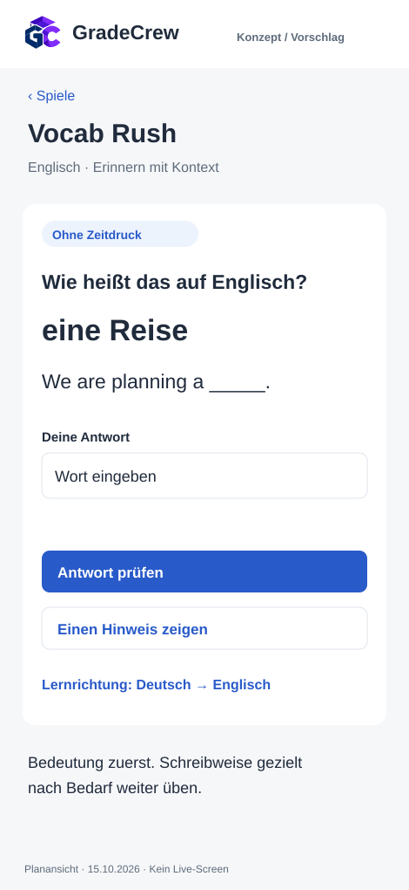
Phone. Freie Eingabe mit Kontext fordert aktiven Abruf. Sprachrichtung und orthografische Strenge werden vor dem Start getrennt erklärt; Audio wird hier nicht als vorhandene Fähigkeit behauptet.